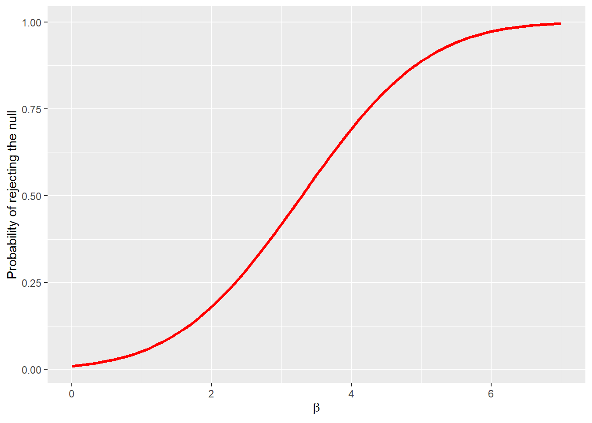

Chapter 6 Hypothesis Testing and Interval Estimation; Answering Research Questions
6.1 Computing Corner
We will learn the basics for hypothesis testing in R.
6.1.1 Probability Distributions in R
Every probability distribution has four functions associate with it. These command for each distribution is prepended by a letter to indicate the functionality.
- “d” returns the height of the probability “d”ensity function
- “p” returns the cumulative density function or the “p”robability of being being between two values of the random variable.
- “q” returns the inverse density function or the value of the random variable (“q”uantile) given a probability.
- “r” returns a “r”andomly generated number from the probability distribution
The distributions you are most likely to encounter in econometrics are the normal (norm), the F distribution (f), the chi-square distribution (chisq), and Student’s t-distribution (t). Others include the uniform (unif), binomial (binom), Poisson (pois), etc. Use of the help tab in the Files/Plots/Packages/Help pane or use of args will list the arguments necessary to extract value for each distribution.
6.1.2 Critical Values in R
To calculate critical values necessary to perform hypothesis tests use the “q” version of the probability distribution. This will return the critical value of the test-statistic for the given probability. The probability under the curve will be cumulative from \(-\infty\) to the quantile returned. The “q” version will return the critical value for a one-tail test. Suppose you’d like to test the following hypothesis about \(\mu\):
\[H_0:\mu=0\]
\[H_1:\mu<0\]
at the \(\alpha=.05\) level of significance. To calculate the critical t-statistic call qt(p = .05, df = n-1). You know from args(qt) the default value of the argument lower.tail is TRUE. Suppose, instead, you’d like to test the following hypothesis about \(\mu\)
\[H_0:\mu=0\]
\[H_1:\mu>0\]
at the \(\alpha = .10\) level of significance. We can call qt in two ways:
qt(p = .10, df = n-1, lower.tail = FALSE)orqt(p = .90, df = n-1)
Finally, suppose we’d like to test the following hypothesis about \(\mu\)
\[H_0:\mu=0\]
\[H_1:\mu\ne0\]
at the \(\alpha=.01\) level of significance. Since the t-distribution is symmetric, we can use the lower tail or upper tail value and -1 times it. We can call qt in three ways:
qt(p = .005, df = n-1)orqt(p = .005, df = n-1, lower.tail = FALSE)orqt(p = .995, df = n-1)
We can find critical values for the normal, F, and \(\chi^2\) distributions with similar function calls.
6.1.2.1 p values in R
To calculate p values in R, use the “p” version of the distribution call. Suppose we test the following hypothesis:
\[H_0:\sigma_1^2=\sigma_2^2\] \[H_0:\sigma_1^2\ne\sigma_2^2\]
at the \(\alpha=.05\) level of significance. We could use an F test of the form
\[F=\frac{s_x^2}{s_y^2}\]
where \(s_x^2\) and \(s_y^2\) are the sample variances with n-1 and m-1 degrees of freedom. To calculate the p value, call pf(f, n-1, m-1) where f is the value calculated above.
6.1.3 Confidence Intervals for OLS estimates
We can estimate the confidence interval estimates for our parameter estimates by calling confint on the lm object.
2.5 % 97.5 %
(Intercept) 85.09 158.1
donuts_per_week 4.91 13.5We “lose” the parameter estimates though. We can append the confidence interval onto a “tidied” lm object by introducing confint as an argument in broom::tidy().
# A tibble: 2 x 7
term estimate std.error statistic p.value conf.low conf.high
<chr> <dbl> <dbl> <dbl> <dbl> <dbl> <dbl>
1 (Intercept) 122. 16.6 7.33 0.0000149 85.1 158.
2 donuts_per_week 9.22 1.96 4.71 0.000643 4.91 13.5Note the use of the pronoun . in the confint call as an argument to tidy. One of the great features of R is the ability to use a function call as an argument in another function call because all function calls return objects.
6.1.4 Power Curves
The power curve represents the probability of making Type II error under alternative null hypotheses. We can generate the power of the test with the pwr.norm.test(d = NULL, n = NULL, sig.level =.05, power = NULL, alternative = c("two-sided", "less", "greater")) call from the pwr package and plot the power with ggplot. To estimate the power we need the effect size \(d = \beta_i - \beta\) where \(\beta\) is the hypothesized parameter value. We will use
\[H_0: \beta = 0\] \[H_1: \beta > 0\]
The \(\beta_i\) represent alternative null hypotheses for \(\beta\). Let’s let \(0 < beta < 7\). Let the significance level be \(\alpha=.01\) and \(se_{\beta} = 1\).
beta_i <- seq(0, 7, .1)
# creates a sequence from 0 to 7 by 0.1
se_beta <- 1 # to keep se_beta = 1 we will set n = 1 below.
pwr <- pwr::pwr.2p.test(beta_i, n = 1, sig.level = .01, alternative = "greater")
#this returns a list we need to extract, h and power from the list into a tibble
# data <-
tibble(beta = pwr$h, power = pwr$power) %>%
ggplot(aes(x = beta, y = power)) +
geom_line(color = "red", size = 1.2) +
ylab("Probability of rejecting the null") +
xlab(expression(beta))